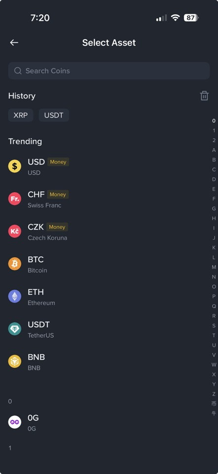
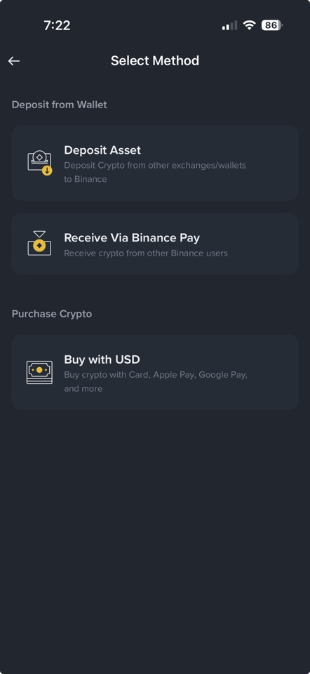

준비 핵심 개념 및 출발 전 체크사항
핵심 비유: 코인 전송은 택배 보내기와 같습니다.
• 입금 주소(Deposit Address) = 아파트 주소
• 데스티네이션 태그(Tag) = 아파트 동·호수 (숫자 코드)
• 입금 주소(Deposit Address) = 아파트 주소
• 데스티네이션 태그(Tag) = 아파트 동·호수 (숫자 코드)
- 동일 명의 확인: 업비트와 바이낸스에 가입한 본인 이름과 생년월일이 같아야 송금할 수 있습니다.
- 출금 대기 시간 확인: 기존에 보유 중이던 XRP는 즉시 출금 가능합니다. 단, 업비트에 원화(현금)를 새로 입금한 경우 해당 금액만큼은 입금 시점부터 24시간(최초 입금 시 72시간) 동안 출금이 제한됩니다.
- 소액 테스트 송금: 처음 전송할 때는 최소 수량(약 1~2 XRP)만 먼저 보내 도착 여부를 확인한 뒤 나머지 수량을 보내는 것이 안전합니다.
STEP 1 바이낸스 모바일에서 XRP 입금 주소 확인
코인 종류마다 지갑 주소가 다르므로 반드시 리플(XRP) 전용 주소를 발급받아야 합니다.
- 바이낸스 앱 하단 오른쪽 [Assets](지갑) 탭을 누릅니다.
- 노란색 [Add Funds] 버튼을 누릅니다.
- Select Asset 화면이 나오면 위쪽 돋보기(
Search Coins) 칸에 XRP를 입력하고, 검색된 XRP를 누릅니다.
Select Asset 화면 · 돋보기 칸에 XRP 입력 (누르면 크게 보여요) - Select Method 화면이 나오면 맨 위의 [Deposit Asset]을 누릅니다.

Select Method 화면 · Deposit Asset 선택 (누르면 크게 보여요) - 네트워크 선택 창에서 반드시
XRP Ledger(또는 Ripple)를 선택합니다. - 화면에 표시되는 Deposit Address(입금 주소)와 XRP Tag(숫자 태그) 각각의 복사 아이콘을 눌러 복사합니다.
네트워크 주의:
BNB Smart Chain (BEP20)이나 Ethereum (ERC20) 등 다른 네트워크를 선택하면 코인이 유실될 수 있으므로 반드시 XRP Ledger를 선택하세요.
STEP 2 업비트에서 바이낸스로 XRP 출금하기
- 업비트 앱 하단 [입출금] 메뉴에서 엑스알피(XRP)를 선택하고 [출금하기]를 누릅니다.
- 보낼 수량을 입력하고 [확인]을 누릅니다.
- 받는 사람 거래소(입금처)에서 바이낸스(Binance)를 선택합니다.
- 바이낸스에서 복사한 정보를 각 칸에 정확히 붙여넣습니다.
- [출금신청]을 누른 뒤 카카오톡 또는 네이버 본인 인증을 완료합니다. (보통 1~5분 내 입금 완료)
| 업비트 입력 칸 | 바이낸스에서 복사할 항목 | 형식 및 주의사항 |
|---|---|---|
| 받는 사람 주소 | Deposit Address | r로 시작하는 긴 영문+숫자 조합 |
| 데스티네이션 태그 | XRP Tag (또는 Memo) | 영문 주소가 아닌 숫자로만 된 번호 입력 |
STEP 3 바이낸스 COIN-M 선물 거래 방법
입금이 완료되면 리플은 바이낸스의 현물 지갑(Spot)에 들어옵니다. 내부 지갑 간 이체는 수수료가 무료이며 즉시 이동됩니다.
1. 현물 지갑(Spot) → COIN-M 선물 지갑으로 이체
- 바이낸스 앱 하단 [Assets] → 상단 [Transfer](이체)를 누릅니다.
- From:
Spot/ To:COIN-M Futures로 설정합니다. (USDⓈ-M이 아닌COIN-M선택) - Coin:
XRP선택 후 수량을 입력(전체는Max)하고 [Confirm Transfer]를 누릅니다.
2. COIN-M 선물 화면 설정 및 포지션 진입
- 하단 [Futures](선물) 탭을 누른 뒤 맨 위 메뉴에서
COIN-M을 선택합니다. - 종목 선택창에서
XRPUSD CM(또는XRPUSD Perpetual)을 고릅니다. - 주문창 상단에서 마진 모드를
Isolated(격리)로 설정하고, 레버리지(배율)를 낮고 안전하게 맞춥니다. - 주문 방식(시장가
Market/ 지정가Limit)과 수량 비율을 정한 뒤 상승 예상 시Buy / Long, 하락 예상 시Sell / Short를 누릅니다. - 거래를 마칠 때는 하단
Positions탭에서Close Position을 눌러 수익·손실을 확정합니다.
자산 보호 및 격리 보관 팁: COIN-M 지갑의 코인은 선물 거래의 증거금으로 쓰이기 때문에, 포지션이 불리하게 움직이면 청산될 수 있습니다. 따라서 거래할 때만 COIN-M 지갑으로 옮겨 사용하고, 거래가 끝나면 [Transfer]에서 방향을 반대로(
참고: 현물 지갑으로 옮겨도 XRP 시세 변동(오르고 내리는 것)은 그대로 받습니다. 시세 변동까지 피하고 싶다면 USDT 같은 스테이블코인으로 바꿔 보관하세요.
COIN-M Futures → Spot) 바꿔 현물 지갑으로 빼두는 것이 안전합니다.참고: 현물 지갑으로 옮겨도 XRP 시세 변동(오르고 내리는 것)은 그대로 받습니다. 시세 변동까지 피하고 싶다면 USDT 같은 스테이블코인으로 바꿔 보관하세요.